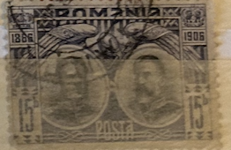
| SOURCE | TITLE| IMAGE MATCH | click to source page |
| Find Your Stamps Value | Prince Carol Shaking Hands with His Captive, Osman Pasha 10b carmine & black stamp price, value |  |
| eBay | 1906 Carol I,Prince & King,40 Years of Rule,Golden Eagle bird,Romania,Mi.191,MNH | eBay | 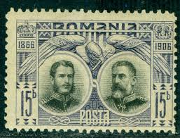 |
| The Philately | Romania 1906 Mi 191 Carol I as Domnitor and King Sc 180 for sale at The Philately | 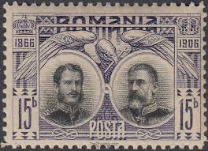 |
| Shutterstock | Bucharest Romania Stamp: Over 859 Royalty-Free Licensable Stock Photos | Shutterstock | 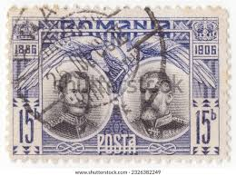 |
| eBay | Belgium 100 Francs 20 belgas 06-09-1941 WWII Banknote Rare Old Currency Date | eBay | 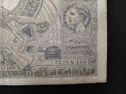 |
| HipStamp | O) 1949 Haiti, DIE Proof, George Washington, J. J. Dessalines and Simon Bolivar, | Caribbean - Haiti, Stamp / HipStamp | 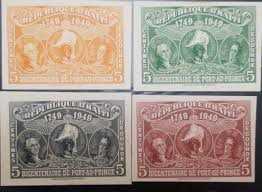 |
| Stamp Auction Network | Robert A. Siegel Auction Galleries, Inc. Sale - 1194 Page 63 | 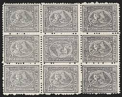 |
| Are these worth anything? : r/stamps | 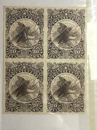 | |
| eBay | 33 ANTIQUE U.S. REVENUE TAX PAID STAMPS FOR 8, 10, 15, 20 CIGARETTES SERIES 1910 | eBay | 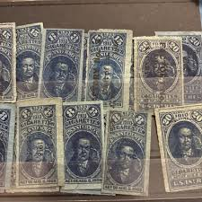 |
| eBay | British George V Stamps without Gum for sale | eBay | 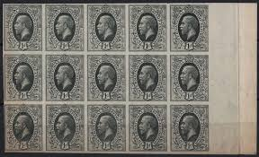 |
| eBay | Used Russian & Soviet Union 1921-1930 Year of Issue Stamps for sale | eBay | 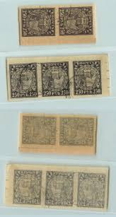 |
| Burda Auction | Most interesting by clients / Philately / Public Auction 60 | Burda Auction (Filatelie Burda) | 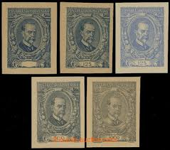 |
| eBay | 1940's 10 Sen Post War Military Currency- Japan | eBay | 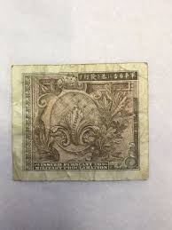 |
| Stamp Auction Network | Prices Realized | 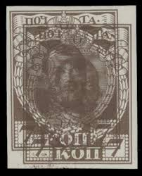 |
| Burda Auction | Masaryk Issue 1920 / Czechoslovakia 1918-1939 / Philately / Public Auction | Burda Auction | 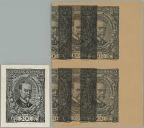 |
| eBay | Allied Military Currrency WWII Japan 50 Sen Series 100, 13 Notes | eBay | 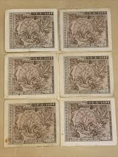 |
| Etsy | Stamp Art, Gray, King Christian X, 50 Ore, Denmark, Used Stamps - Etsy | 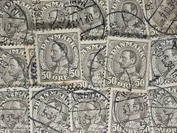 |
| Stamp Auction | Daniel F. Kelleher Auctions, LLC Sale - 682 Page 20 | 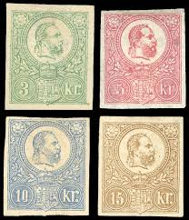 |
| Stamp Auction Network | Prices Realized | 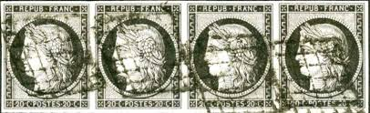 |
| Harmer-Schau Auctions | Harmer-Schau Auctions | 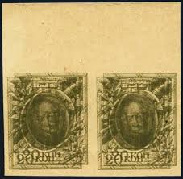 |
| Dead Country Stamps and Banknotes | Obock, French Colony (1884 - 1896) - Dead Country Stamps and Banknotes | 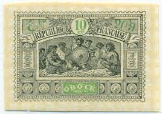 |
| eBay | AOP) OBOCK #53 1894 25c used | eBay | 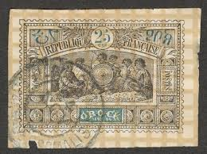 |
| Burda Auction | Masaryk Issue 1920 / Czechoslovakia 1918-1939 / Philately / Online Auction | Burda Auction | 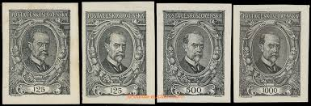 |
| Invaluable.com | Sold at Auction: JAPAN 10 SEN MILITARY CURRENCY SERIES 100 | 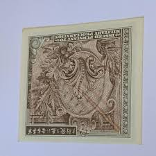 |
| Stamp Auction Network | Prices Realized | 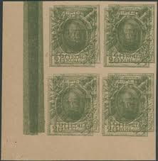 |
| eBay | Obock 1894 Somali Warriors DIE PROOFS (x8): 1c, 2c, 5c, 10c, 15c, 20c, 50c, 75c | eBay | 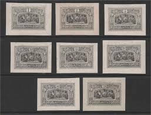 |
| Find Your Stamps Value | Value of posta romania 5 bani stamps | 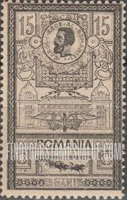 |
| Stamp Auction | BEHR Philatelie Sale - 47 Page 188 | 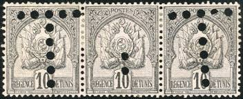 |
| usarare.com | FR-1229 5 CENT FRACTIONAL 65Q - USA Rare | 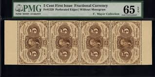 |
| Stamp Community Forum | Obock Stamps - Stamp Community Forum | 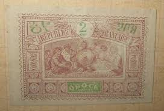 |
| Colnect | France : Stamps [Year: 1849] [1/2] : Colnect 📮 | 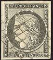 |
| 1918 Germany 20 Mark notes with misaligned serial numbers — error variety? Value check? Help? : r/papermoney | 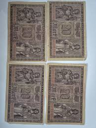 | |
| Blogger.com | Big Blue 1840-1940: Obock | 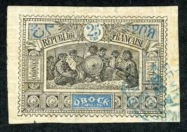 |
| Blogger.com | France 1849-1900 - Big Blue 1840-1940 | 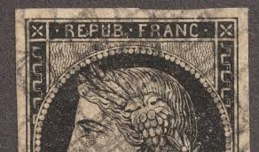 |
| Stamp Auction | Cherrystone Auctions Sale - 1120 Page 28 | 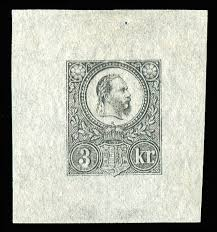 |
| eBay | Russia RSFSR ☭ 1921 SC 183 mint different shades and paper. f8173 | eBay | 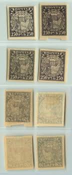 |
| Stamp Community Forum | Trying To Identify Both The Denomination And Country. - Stamp Community Forum | 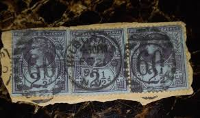 |
| eBay | Czechoslovakia Stamp Scott #61-63, President Masaryk, Mint & Used, SCV$5.75 | eBay | 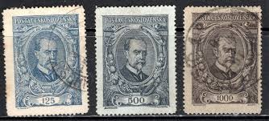 |
| eBay | 1952 AUSTRIA, No. 816 block of 8, recommended by Innsbruck for Brescia (Italy) | eBay | 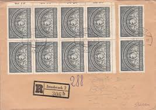 |
| University of Toledo | The Perry Collection | 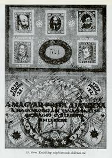 |
| Aukcijska Kuća Barac&Pervan | Barac&Pervan Auctions • Item | 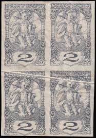 |
| Burda Auction | Masaryk Issue 1920 / Czechoslovakia 1918-1939 / Philately / Mail Auction | Burda Auction | 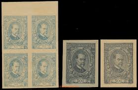 |
| eBay | Rumänien, 1 B. schwarz, graues Papier, waagr. Paar, re. Marke SENKR UNGEZÄHNT, * | eBay |  |
| eBay | 1932 Mexico Stamp Lot AP4 C46 CA83 | eBay | 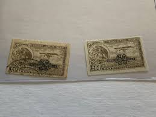 |
| Filatelia Longobardi | Filatelia Longobardi | 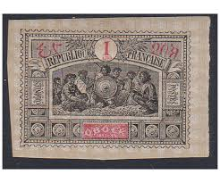 |
| eBay | 3 Varieties Type IA And IB Standing On Sheet Of White N°107g X150 Type IA | eBay | 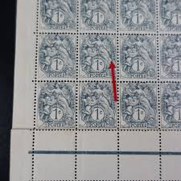 |
| eBay | Austria 1996 Blackprint of stamp (Michel 2187) in block of four nice MNH | eBay | 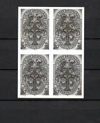 |
| eBay | MILITARY CURRANCY TEN SEN, series 100 | eBay | 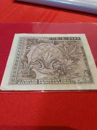 |
| eBay | LOT FROM 1947 CCCP RUSSIA VF USED K5 | eBay | 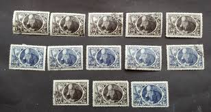 |
| eBay | LUFTWAFFE GENERAL - HG German Third Reich NSDAP Souvenir stamp block sheet | eBay | 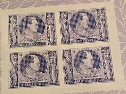 |
| eBay | MILITARY CURRENCY ONE YEN | eBay | 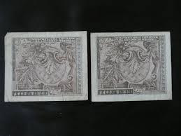 |
| World stamps : r/stampcollecting | ||
| Stamp Community Forum | Austria N5 Newspaper Stamp Define "coarse" And "fine" - Stamp Community Forum | |
| Mystic Stamp Company | 110 - 1884 Great Britain, Queen Victoria - Mystic Stamp Company | |
| Burda Auction | Masaryk Issue 1920 / Czechoslovakia 1918-1939 / Philately / Mail Auction | Burda Auction | |
| eBay | OBOCK 50 MINT HINGED OG * NO FAULTS VERY FINE! - AHN | eBay | |
| nordfrim.com | Buy Monaco 1979 - YT BF17 - Mint | |
| eBay | JAPANESE MILITARY CURRENCY NOTE WWII Ten Sen A03507436A To A03507439A #1587 | eBay | |
| Mystic Stamp Company | RA3 - 1925 Nyassa - Mystic Stamp Company | |
| Burda Auction | Masaryk 1920 / ČSR I. / Filatelie / Písemná aukce 17 | Burda Auction (Filatelie Burda) |